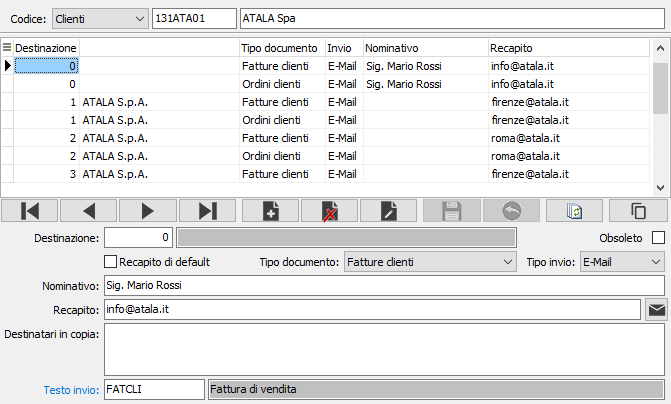

Recapiti invio documenti
Alla procedura si può accedere premendo il bottone Manutenzione della linguetta Recapiti eMail/Fax presente nella sezione Contatti dell'anagrafica clienti o fornitori.
Il programma consente di manutenere i recapiti che saranno utilizzati per l'invio dei documenti per eMail o Fax.

CODICE CLIENTE / FORNITORE: campo alfanumerico di 8 caratteri presente in anagrafica per indicare il cliente / fornitore a cui si riferiscono i recapiti. Sul campo sono attive le funzioni di ricerca della tabella.
DESTINAZIONE: eventuale destinazione diversa del cliente, o provenienza del fornitore, a cui si riferisce il singolo recapito; con valore zero, cioè nessuna destinazione, è possibile impostare il checkbox Recapito di default. Sul campo sono attive le funzioni di ricerca della tabella.
RECAPITO DI DEFAULT: definisce, nel caso di documento con destinazione non codificata nei recapiti, che l'invio debba essere comunque effettuato a questo recapito (casella con segno di spunta). Il campo è attivo solo per destinazioni zero (nessuna destinazione).
TIPO DOCUMENTO: definisce il tipo di documento a cui associare il recapito; valori possibili: Offerte, Ordini, Packing, DDT, Fatture e Parcelle per i clienti; Ordini, Ordini terzisti e DDT terzisti per i fornitori, Solleciti clienti, Estratto conto, Autocertificazioni appalti, Tutti i documenti; specificando "Tutti i documenti" si potranno inviare allo stesso indirizzo tutti i documenti senza dover ripetere lo stesso recapito per ogni tipo di documento da inviare; in ogni caso se si inserisce un recapito per un tipo documento specifico questo è prevalente sul tipo documento generico (quindi è possibile inviare il DDT ad un recapito e tutti gli altri documenti ad un recapito diverso per il quale come Tipo documento è stato impostato il valore “Tutti i documenti”).
TIPO INVIO: definisce il metodo di invio dei documenti al recapito: email o fax.
NOMINATIVO: indicare il nome del destinatario che sarà utilizzato per l'invio dei documenti.
RECAPITO: indicare l'indirizzo del destinatario per le eMail oppure il numero del fax.

 Il pulsante consente di inviare una email all'indirizzo email; si apre una finestra dove viene precompilato l'indirizzo del destinatario ed è possibile indicare un destinatario per conoscenza, l'oggetto, il testo del messaggio ed eventualmente la richiesta di conferma di lettura; è presente anche un pulsante Allegati che consente di aggiungere allegati di qualsiasi tipo.
Il pulsante consente di inviare una email all'indirizzo email; si apre una finestra dove viene precompilato l'indirizzo del destinatario ed è possibile indicare un destinatario per conoscenza, l'oggetto, il testo del messaggio ed eventualmente la richiesta di conferma di lettura; è presente anche un pulsante Allegati che consente di aggiungere allegati di qualsiasi tipo.
DESTINATARI IN COPIA: indicare eventuali indirizzi email da inserire nel messaggio come indirizzo CC.
TESTO INVIO: codice del testo di invio specifico da utilizzare per questo recapito; sul campo sono attive le funzioni di ricerca (F9).